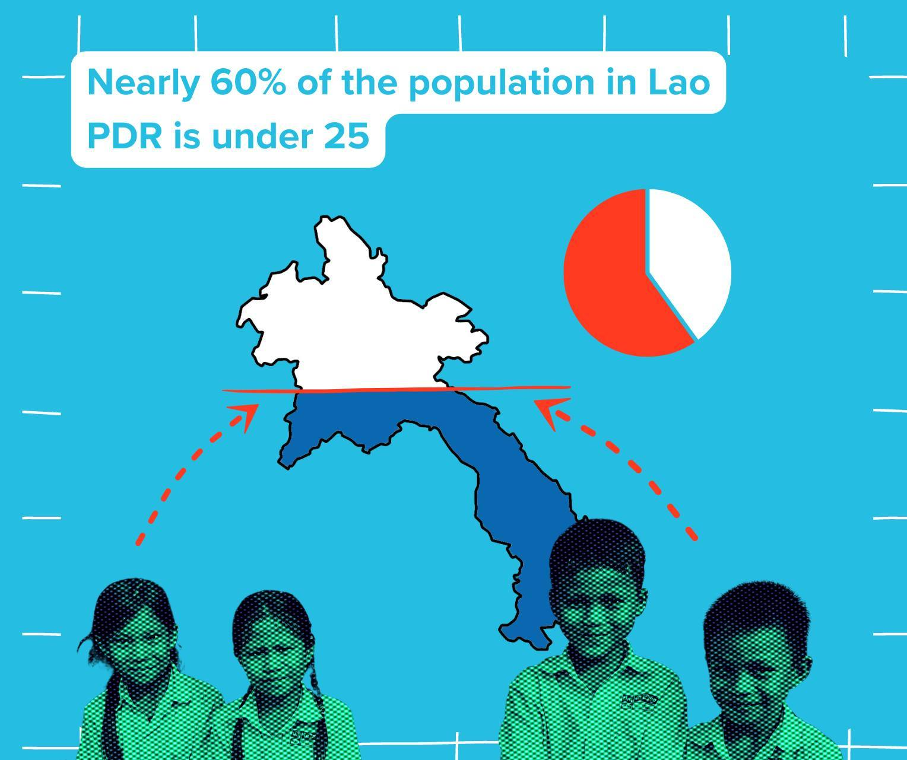
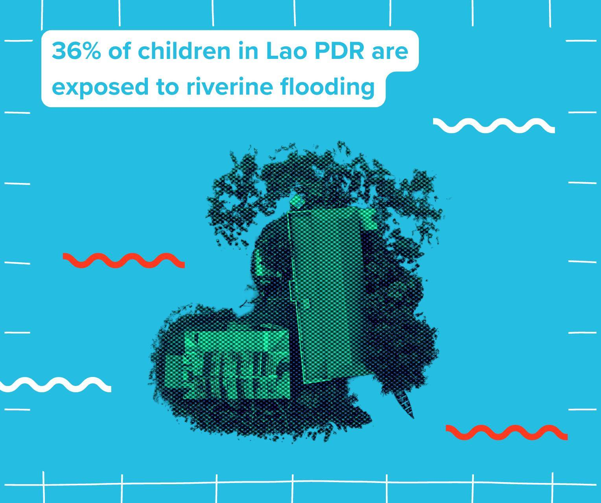
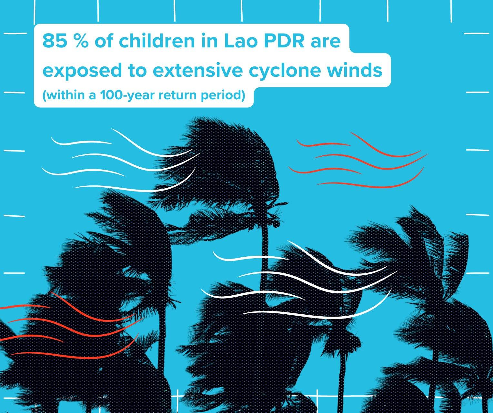
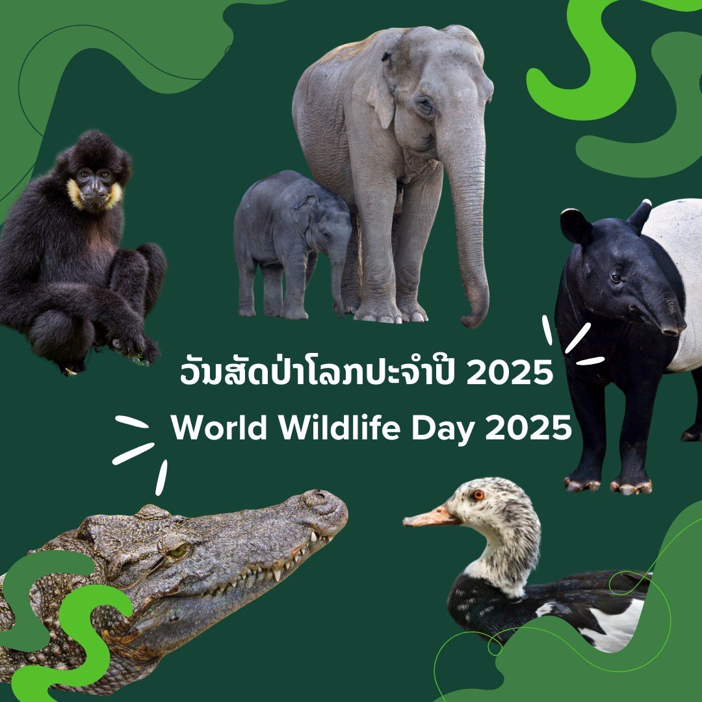
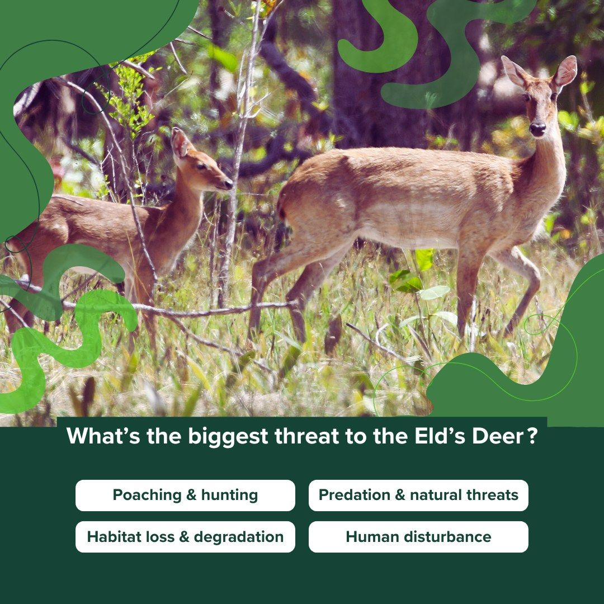
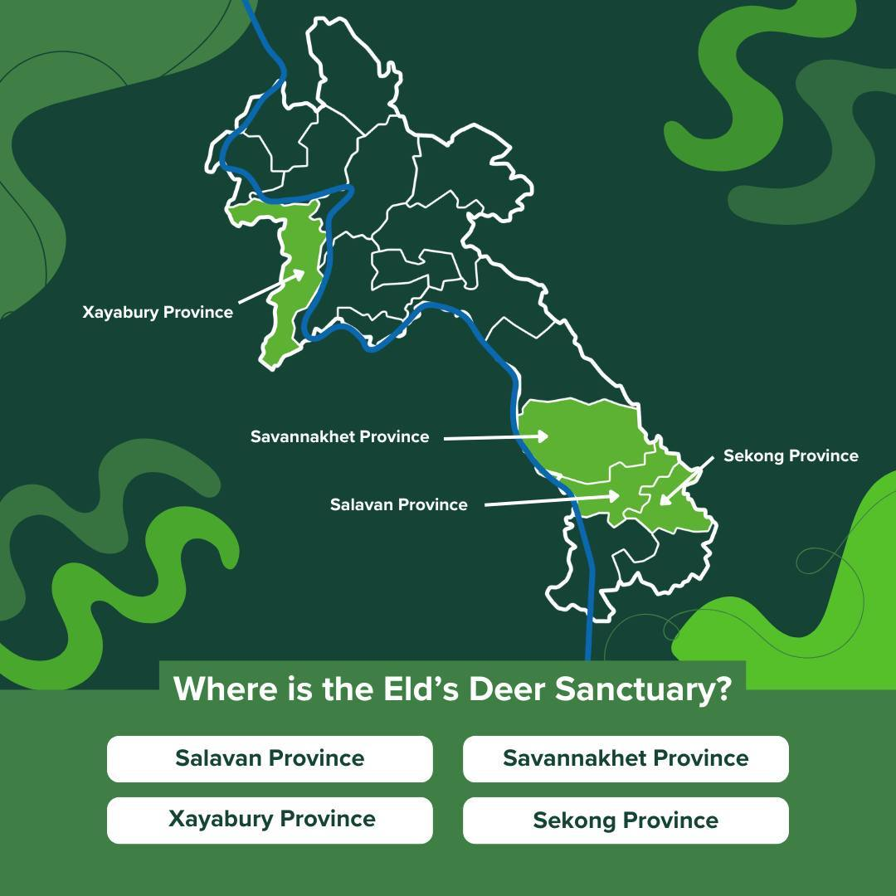
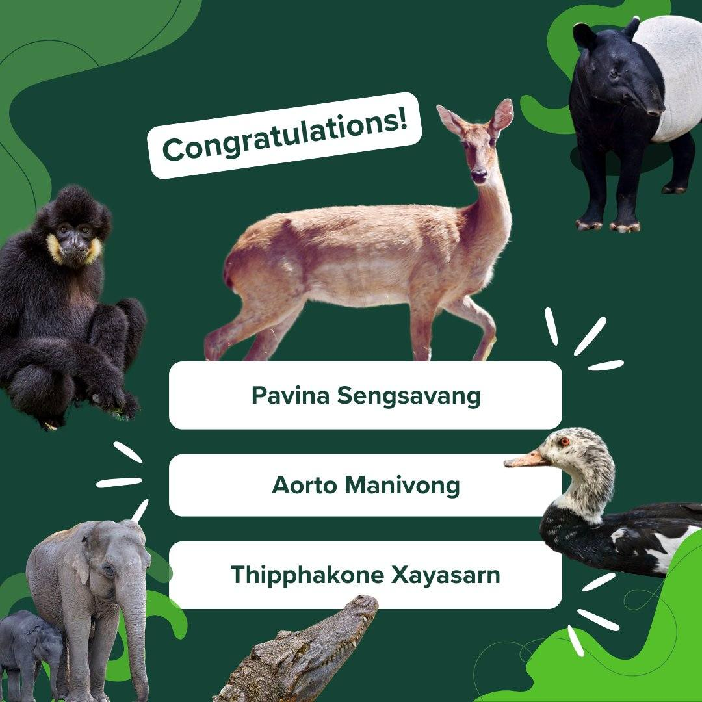

A selection of content creation projects, such as a blog story, social media posts and videos for the International Day for Disaster Risk Reduction (IDDRR), and a quiz for World Wildlife Day.
United Nations Development Programme – Environment Unit - Lao PDR Content creation - Social media



Facebook Post Did you know information about youth in Lao PDR - raising awareness about the importance of disaster risk reduction and resilience leading up to the International Day of Disaster Risk Reduction 2024Facebook Cover Design
for the International Day of Disaster Risk Reduction 2024
Video created with existing footage and images
produced for the International Day of Disaster Risk Reduction. It combined both existing and newly recorded content. The project team coordinated the recording of messages from various agency heads, including that of UNDP’s Resident Representative, where I assisted on site and supported the filming process. I handled post-production, cleaning up the sound, refining the footage, and assembling the final edit. The video was published on UNDP Lao PDR’s Facebook and Instagram channels on 13 October 2024. To appeal to younger audiences, I applied a half-tone, duotone visual style. The video was in English with Lao subtitles to ensure accessibility and inclusivity. I used Canva and Adobe Premiere Pro, and worked with colleagues on the translation and review of the Lao subtitles.
United Nations Development Programme – Environment Unit - Lao PDR Content creation – Blog story
Blog (use arrows to view slideshow) Snippets from a blog story I developed using information I gathered from the Enhancing Integrated Water Management and Climate Resilience in Vulnerable Areas of the Mekong River Basin (RoK Mekong Project). I repurposed existing materials from the project’s archives - content that had been collected but not yet used, to create an engaging story that highlights the project’s goals, activities, and achievements in an accessible way for a general audience. The blog was designed and laid out in Canva, with supporting photo editing completed in Adobe Photoshop.
United Nations Development Programme – Environment Unit - Lao PDR Content creation - Social media




Social media design for World Wildlife Day The post highlighted a past UNDP project with the Eld's Deer Wildlife Sanctuary on wildlife conservation. It included a competition designed to encourage people to like, share, and learn more, and was published in both Lao and English.